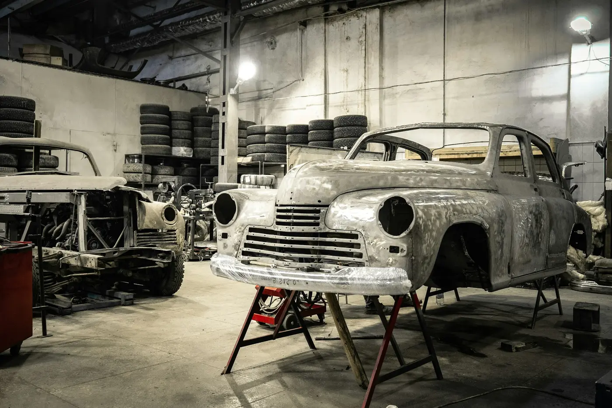
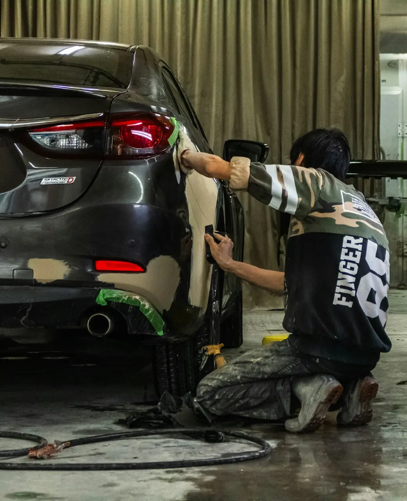
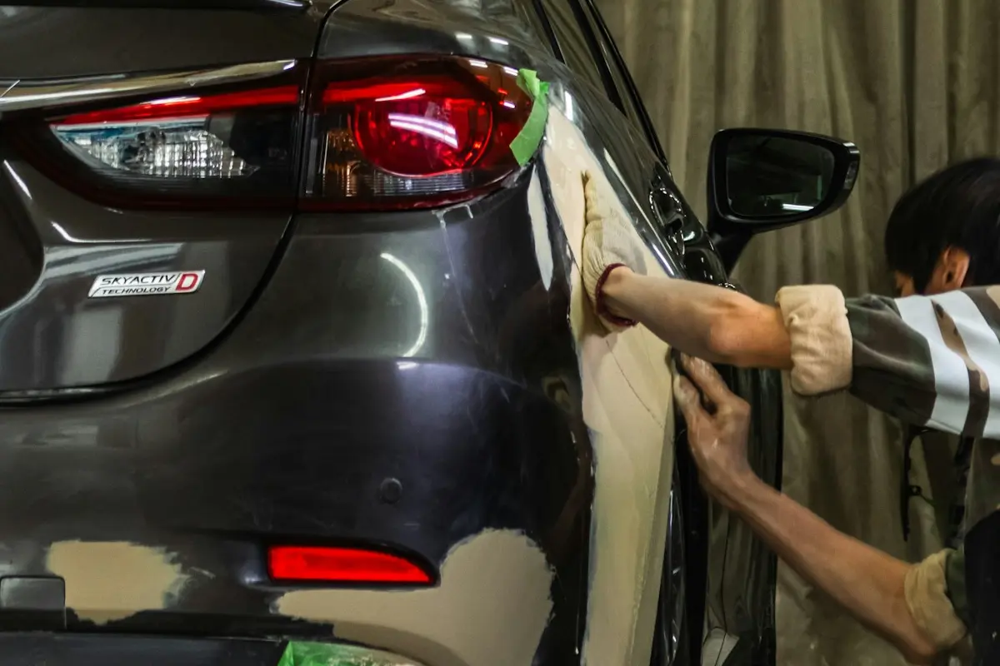
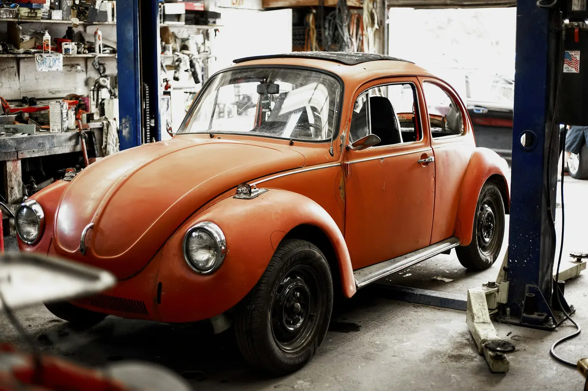
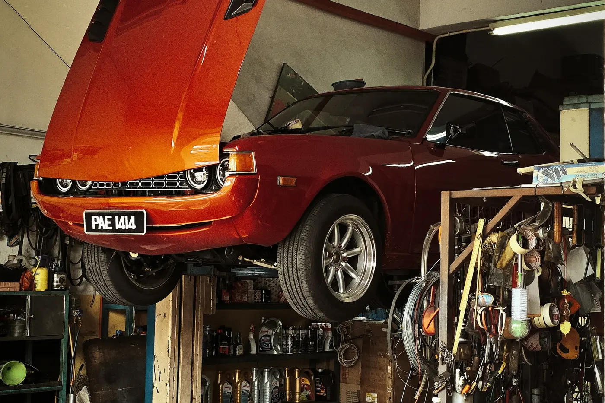
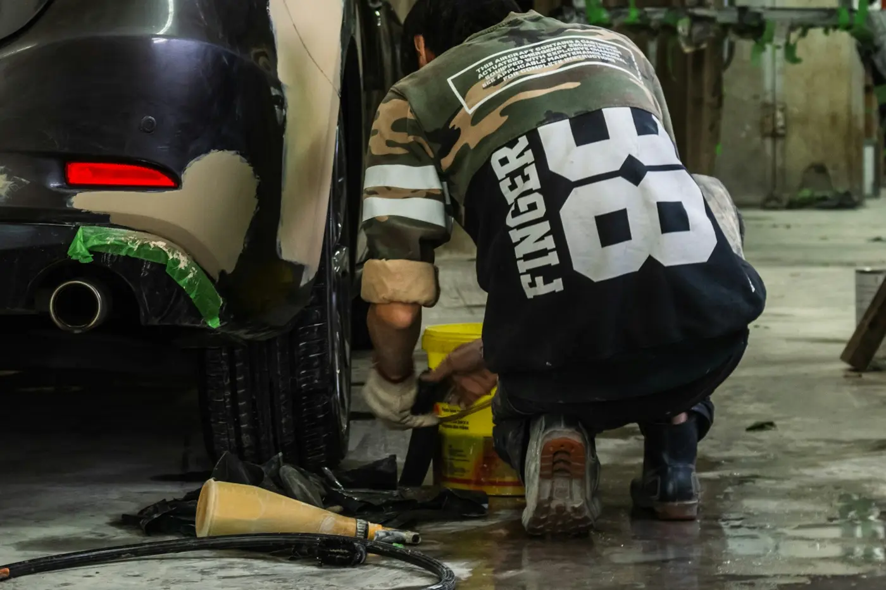

Karosseriebau
Richten, Instandsetzen und Erneuern von Karosserieteilen. Unser Handwerk, Innungsbetrieb.
Unfallschaden, Karosserie und Lack aus einer Hand. Dazu Inspektion und TÜV-Vorbereitung, damit Sie schnell wieder sicher unterwegs sind.
4,7 Sterne bei 145 Google-Bewertungen. Innungsbetrieb der Karosserie- und Fahrzeugbauer-Innung Baden. Im Steingerüst 45, Rastatt.

Karosserie, Lack und Werkstatt in einem Betrieb. Sie haben einen Ansprechpartner, vom ersten Blick auf den Schaden bis zur Übergabe.

Richten, Instandsetzen und Erneuern von Karosserieteilen. Unser Handwerk, Innungsbetrieb.

Lackieren nach der Reparatur, damit am Ende nichts mehr zu sehen ist.

Wartung und Reparaturen rund ums Fahrzeug, in der gleichen Werkstatt.

Wir prüfen und richten Ihr Auto vor der Hauptuntersuchung, damit es ohne Mängel durchgeht.
Sagen Sie uns, was passiert ist. Wir sehen uns den Schaden an, besprechen mit Ihnen das weitere Vorgehen und setzen Ihr Fahrzeug wieder instand, von der Schadenaufnahme bis zur Übergabe.
07222 989292 anrufen
Auch Inspektion und Service erledigen wir für Sie, ohne dass Ihr Auto die Werkstatt wechseln muss.
Der Durchschnitt aus 145 Google-Bewertungen. Dazu einige Stimmen aus anderen Bewertungsportalen.
„Seit 1994 die Werkstatt meines Vertrauens. Tip Top!“
„Mein Seat hatte einen Frontschaden. Es wurde alles schnell und unkompliziert erledigt. Sehr zu empfehlen.“
„Ich habe schnell einen Termin bekommen. Der Chef ist sehr nett und gibt sich viel Mühe.“
„Schnell, freundlich und kompetent. Die Preise sind auch okay, weiter so.“
Montag bis Freitag 8:00 bis 17:30 Uhr, Samstag 8:00 bis 12:00 Uhr.
Am besten vorher kurz anrufen. Für eine schnelle Frage können Sie auch ohne Termin vorbeikommen.
E-Mail und Fax
Fax 07222 165199
Inhaber
Zoltan Sacal, Mitglied der Karosserie- und Fahrzeugbauer-Innung Baden